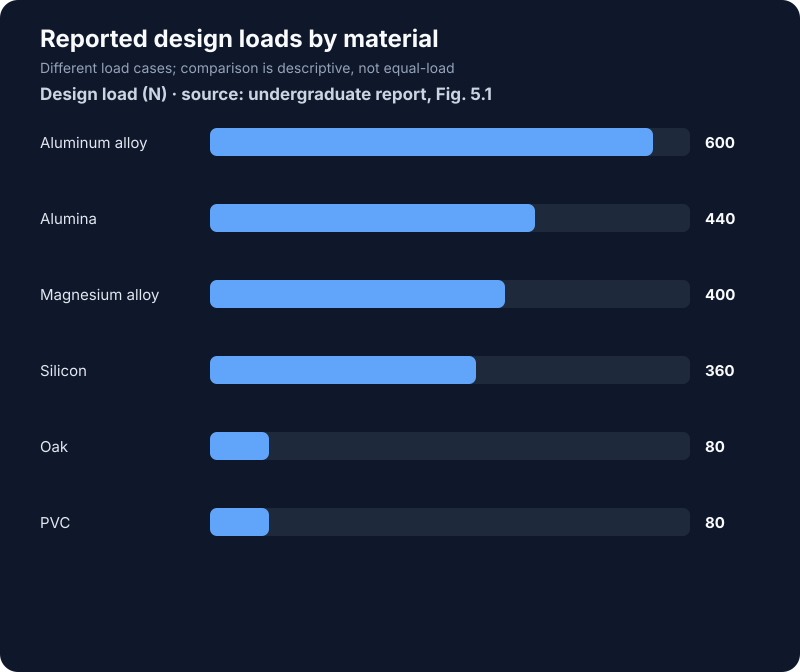

Undergraduate team project · 2021
Exoskeleton Arm Structural Analysis
A material and structural comparison for a lightweight wearable arm frame.
Design question
How do candidate materials change the mass, deformation, and stress of an exoskeleton arm under a prescribed load? The project modeled the arm structure and compared several materials using finite element results.
Method
The study evaluated candidate materials at their stated design loads and reviewed total deformation, equivalent stress, equivalent strain, and factor of safety. The project report also compares where stresses concentrate, particularly around contact and joint regions.
Results
For the aluminum-alloy 6061-T6 model, the report gives a mass of 0.845 kg and a design load of 600 N. The team selected aluminum alloy as the preferred overall material in its comparison. The report notes that alumina produced smaller deformation and may be preferable when stiffness is the primary objective.

Interpretation and limits
The loads differ across material cases in the report, so the stated design-load figures should not be treated as an equal-load, equal-safety-margin ranking. The result is a simulation-based design study, not a claim of a built or clinically tested device.
Team and source
This was a team project by Sateesh Pechetti, Avinash Padi, and Tanuja Potula. Based on “Modeling and Structural Analysis of an Exoskeleton Arm,” especially Chapters 4–6 and the conclusion.